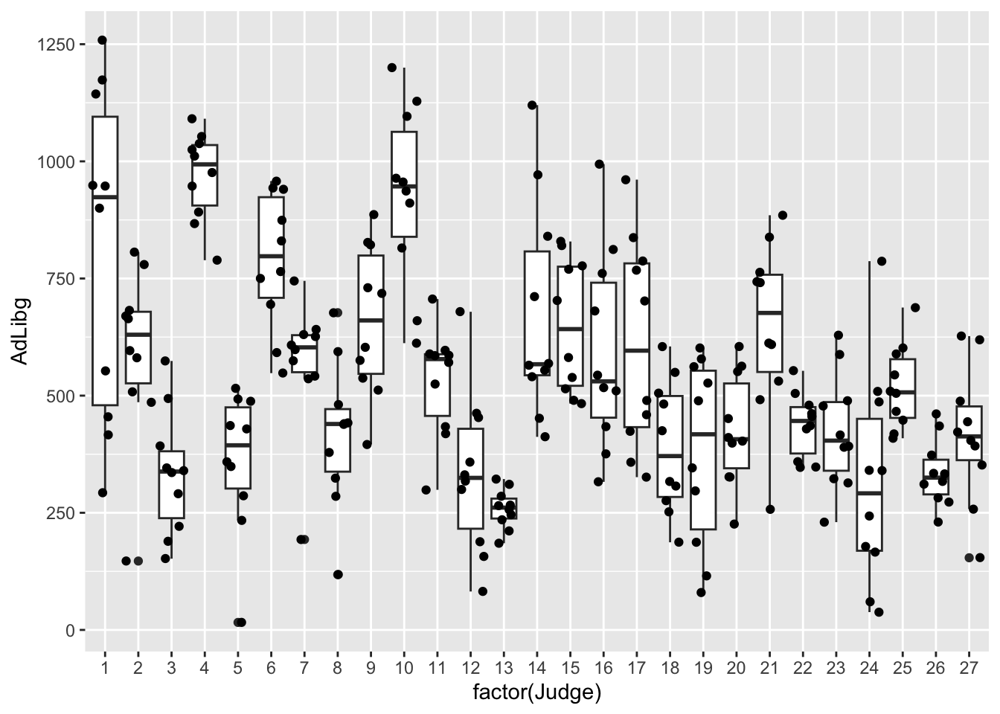

Chapter 5 Descriptive statistics
In this Chapter we will go through the main elements of descriptive statistics.
In principle, descriptive statistics is the act of taking a bunch of data and represent them in few numbers, such as mean, median, standard deviation etc.
For a more thorough introduction you can check every introductory stats book: The first couple of chapters will cover this.
5.1 Descriptives for a continouos variable
5.1.1 Mean / median
vembedr::embed_youtube("https://www.youtube.com/watch?v=uhxtUt_-GyM&list=PL1328115D3D8A2566&index=1")5.1.2 Variance
vembedr::embed_youtube("https://www.youtube.com/watch?v=Qf3RMGXR-h8&list=PL1328115D3D8A2566&index=4")5.1.3 Standard deviation
vembedr::embed_youtube("https://www.youtube.com/watch?v=HvDqbzu0i0E&list=PL1328115D3D8A2566&index=5")For examples we will use two datasets: chili: where and green tea in combination is added to meals and the resulting ad-libitum consumption is recorded, and pasta which is iBuffet data with a survey of preferences for each Person.
The data is made available by:
library(data4consumerscience)
data(chili)
data(pasta)
# we subset to only have the "Pasta with legumes" data.
pasta <- pasta[pasta$StationName=='Pasta with legumes',]If you do not have imported the data4consumerscience package see: Import data from R-package If you need to import data see: How to import data
To compute mean, median, variance, standard deviation, etc. there are functions working directly on vectors:
mean(chili$Totalg)## [1] 1699.977median(chili$Totalg)## [1] 1740.4sd(chili$Totalg)## [1] 459.6292var(chili$Totalg)## [1] 211259IQR(chili$Totalg)## [1] 660.6summary(chili$Totalg)## Min. 1st Qu. Median Mean 3rd Qu. Max.
## 849.6 1289.1 1740.4 1700.0 1949.7 2905.25.2 Distributions of count data
If the response can take certain values or categories, then the table function is good in getting how many observations there are within a given vector, or combinations of several vectors.
table(pasta$I_like_taste_of_pasta_with_legumes)##
## Disagree More or less disagree
## 1 3
## Neither agree nor disagree More or less agree
## 2 5
## Agree Strongly agree
## 8 11table(pasta$I_like_taste_of_pasta_with_legumes, pasta$Did_you_consider_the_proteincontent_of_the_dishes_you_choose)##
## No Yes
## Disagree 0 1
## More or less disagree 2 1
## Neither agree nor disagree 1 1
## More or less agree 1 4
## Agree 0 8
## Strongly agree 5 6You see that most of the answers are in agreement with question, and that there are no observations in the Strongly disagree category.
This is a very high level representation, and we usually want to compare means (or other metrics) between different groups. That is to compute descriptive statistics for subsets of the data. There are two ways to do this. Either using the aggregate() function or use the group_by() and summarize() from the tidyverse framework.
Below both is shown to characterize Totalg on each of the products
5.3 Aggregate
aggregate(chili$Totalg,by = list(chili$Treatment),mean)## Group.1 x
## 1 Capsaicin 1716.195
## 2 Green tea 1664.504
## 3 CH19 1708.977
## 4 Capsaicin+ Green tea 1649.495
## 5 placebo 1759.754aggregate(chili$Totalg,by = list(chili$Treatment),sd)## Group.1 x
## 1 Capsaicin 473.1042
## 2 Green tea 462.2564
## 3 CH19 452.1225
## 4 Capsaicin+ Green tea 450.3940
## 5 placebo 468.42115.4 Tidyverse
library(tidyverse)
tb <- chili %>%
group_by(Treatment) %>% # specify which grouping vector to use
summarise(n = n(), # compute n
mn = mean(Totalg), # compute mean
s = sd(Totalg), # compute s
q1 = quantile(Totalg,0.25), # compute lower 25% quartile
q3 = quantile(Totalg,0.75)) # compute upper 75% quartile
tb ## # A tibble: 5 × 6
## Treatment n mn s q1 q3
## <fct> <int> <dbl> <dbl> <dbl> <dbl>
## 1 Capsaicin 55 1716. 473. 1314. 1943.
## 2 Green tea 53 1665. 462. 1213. 1912.
## 3 CH19 54 1709. 452. 1323. 1959.
## 4 Capsaicin+ Green tea 54 1649. 450. 1271. 1906.
## 5 placebo 54 1760. 468. 1302. 1992Further, lets print the results in a nice looking table using kable() from the knitr package.
library(knitr)
kable(tb, caption = 'some caption', digits = 0, format = 'simple')| Treatment | n | mn | s | q1 | q3 |
|---|---|---|---|---|---|
| Capsaicin | 55 | 1716 | 473 | 1314 | 1943 |
| Green tea | 53 | 1665 | 462 | 1213 | 1912 |
| CH19 | 54 | 1709 | 452 | 1323 | 1959 |
| Capsaicin+ Green tea | 54 | 1649 | 450 | 1271 | 1906 |
| placebo | 54 | 1760 | 468 | 1302 | 1992 |
[MORTEN: kan vi lave en anden form for tabel her? Meld gerne ind hvad type data det kunne være?? for den man får ud giver ikke så meget mening set fra vores side. og så skal vi overveje om “tidyverse” er nice to know viden?]
… and a plot of it
tb %>%
ggplot(data = ., aes(Treatment,mn, ymin = q1, ymax = q3)) +
geom_point() +
geom_errorbar()
test4